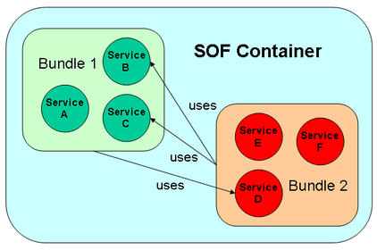
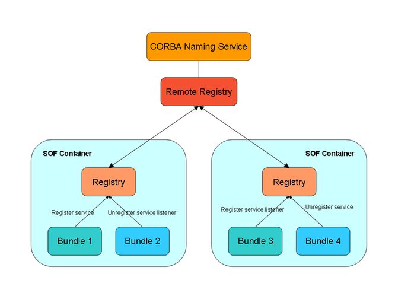

Title: Remote SOF - A modularization framework for C++ supporting distributed software modules.
Author: Mattheus
Email: mattheus@t-online.de
Member ID: 3337502
Language: C++
Platform: Platform independent
Technology: CORBA
Level: Intermediate
Description: The article describes the usage of a modularization framework called Remote SOF supporting distributed
software modules.
Section: Platforms, Frameworks & Libraries
SubSection: Libraries
License: Berkeley Software Distribution (BSD)
Remote SOF (Remote Service Oriented Framework) represents an extension of SOF (Service Oriented Framework). Before reading this article I recommend to read the article about SOF here or the documentation at the website which describes the basic mechanisms of the SOF framework. Remote SOF supports like SOF the modularization of software by deviding the code into several components (called 'bundles') which are able to communicate via clearly defined interfaces (called 'services'). Using SOF the communication between the 'bundles' is limited to one process. That means only bundles of the same process can call each other:

Remote SOF goes a step further and allows the
communication between bundles running in different processes:

The picture above shows the basic architecture of Remote SOF. There can
exist several SOF containers (processes) instead of
only one process when using SOF. The registry component of the SOF
framework represents the central administration component for holding
all information about registered services and service listeners. For
Remote SOF this information is distributed to each 'local' registry
component of all SOF containers by the remote registry component. For
example 'bundle 1' knows the services and service listeners which are
registered by 'bundle 3' and vice versa. If 'bundle 1' registers a
service which 'bundle 3' is interested in, 'bundle 3' will be notified
as soon as the service has been registered by 'bundle 1'. Remote SOF
also allows bundles to call services of bundles within the same process
of course.
CORBA (especially the CORBA implementation MICO) acts as communication layer for the Remote SOF project. That means the remote callable service objects, the remote callable service object listeners and the remote registry are implemented as CORBA objects. Remote SOF tries to hide the CORBA infrastructure as much as possible from you but for some cases (e.g. narrowing CORBA objects, using CORBA types etc.) you have to know about the CORBA basics.
Note: If you only want to implement 'local' bundles (where all bundles run within the same process), use SOF. For implementing distributed software bundles and remote callable services you have to use Remote SOF. It is planned for next versions of Remote SOF to support a mixture of 'local' and remote callable bundles running within one SOF container.As the SOF source code was reused for Remote SOF as far as possible the Remote SOF API does not differ very much from the SOF API.
Changes are:
IRemoteBundleActivator for
implementing a bundle
instead of IBundleActivator.IRemoteBundleContext
instead of IBundleContext for
registering services.RemoteServiceTracker instead
of ServiceTracker for creating
service trackers.IRemoteServiceTracker interface
instead of IServiceTracker for tracking
services.IMultiplier. Apart
from the SOF example the two bundles run in different
processes.IRemoteBundleActivator
interfaceIRemoteBundleActivator
interface
provides the same methods (a destructor for cleaning up used resources,
the start method for starting the
bundle, the stop method for stopping the
bundle) like the IBundleActivator
interface. In contrast to SOF the parameter of the start
and stop method which is used for
registering and deregistering services is not of type IBundleContext
but IRemoteBundleContext. The
following example shows the implementation of the IRemoteBundleActivator
interface for 'bundle1'. The destructor, start
and stop method are filled with code later.#ifndef BUNDLE_ACTIVATOR1_H
#define BUNDLE_ACTIVATOR1_H
#include "sof/framework/remote/corba/IRemoteBundleActivator.h"
#include "sof/framework/remote/corba/IRemoteBundleContext.h"
using namespace sof::framework::remote::corba;
class BundleActivator1 : public IRemoteBundleActivator
{
public:
virtual ~BundleActivator1();
virtual void start( IRemoteBundleContext::ConstPtr context );
virtual void stop( IRemoteBundleContext::ConstPtr context );
};
#endif
REGISTER_REMOTE_BUNDLE_ACTIVATOR_CLASS
has to be used instead of REGISTER_BUNDLE_ACTIVATOR_CLASS.#include "BundleActivator1.h"
#include "sof/instantiation/ObjectCreator.h"
#include "sof/framework/Properties.h"
using namespace sof::instantiation;
using namespace sof::framework;
BundleActivator1::~BundleActivator1()
{
// Deallocate memory
}
void BundleActivator1::start(IRemoteBundleContext::ConstPtr context)
{
// Add code for registering services and service listeners}
}
void BundleActivator1::stop(IRemoteBundleContext::ConstPtr context)
{
// Add code for deregistering services and service listeners}
}
REGISTER_REMOTE_BUNDLE_ACTIVATOR_CLASS( "BundleActivator1", BundleActivator1 )
#include "../../idl/CORBAObjects.idl"The mechanism is very similar to SOF:
interface Multiplier : sof::framework::remote::corba::generated::CORBAService
{
long multiply( in long x, in long y );
};
IService, with Remote
SOF from CORBAService)CORBAService type is defined in
the IDL file
'CORBAObjects.idl' which is distributed with the Remote SOF software
and placed in directory 'sof/remote/idl'. In this IDL file you can find
the interface definitions of all remote callable objects.Multiplier), the stub (Multiplier_stub) and the skeleton (POA_Multiplier) implementation whereas stub and skeleton
encapsulate the details of communication. The stub substitutes the
remote object on client side and forwards all calls via network
connection to the skeleton on server side. Then the skeleton on server
side calls the remote object.The first bundle ('bundle1') must implement the C++
service interface by inheriting from the generated type POA_Multiplier:#ifndef MULTIPLIER_IMPL_HImplementation:
#define MULTIPLIER_IMPL_H
#include "Multiplier.h"
using namespace std;
class MultiplierImpl : virtual public POA_Multiplier
{
public:
virtual CORBA::Long multiply( CORBA::Long x, CORBA::Long y );
};
#endif
#include <CORBA.h>
#include "MultiplierImpl.h"
#include <iostream>
using namespace std;
CORBA::Long MultiplierImpl::multiply( CORBA::Long x, CORBA::Long y )
{
cout << "Multiplier called. " << endl;
return x*y;
}
BundleActivator1
class registers two instances of the multiplier service. Member
variables for the service object (MultiplierImpl)
and the registration object (IServiceRegistration)
are defined for each service instance in the header file.#ifndef BUNDLE_ACTIVATOR1_HIn the following implementation of the
#define BUNDLE_ACTIVATOR1_H
#include "sof/framework/remote/corba/IRemoteBundleActivator.h"
#include "sof/framework/remote/corba/IRemoteBundleContext.h"
#include "sof/framework/IServiceRegistration.h"
#include "MultiplierImpl.h"
using namespace sof::framework::remote::corba;
class BundleActivator1 : public IRemoteBundleActivator
{
private:
IServiceRegistration* serviceReg1;
MultiplierImpl* service1;
IServiceRegistration* serviceReg2;
MultiplierImpl* service2;
public:
virtual ~BundleActivator1();
virtual void start( IRemoteBundleContext::ConstPtr context );
virtual void stop( IRemoteBundleContext::ConstPtr context );
};
#endif
BundleActivator1
class the start
method sets the properties of the service instances and creates the
service objects. Afterwards both service instances are registered by
calling registerRemoteService
(instead of registerService with SOF).#include "BundleActivator1.h"
#include "sof/instantiation/ObjectCreator.h"
#include "sof/framework/Properties.h"
using namespace sof::instantiation;
using namespace sof::framework;
BundleActivator1::~BundleActivator1()
{
// Deallocate memory
}
void BundleActivator1::start(IRemoteBundleContext::ConstPtr context)
{
Properties props;
props.put( "instance", "1" );
this->service1 = new MultiplierImpl();
this->serviceReg1 = context->registerRemoteService( "Multiplier", this->service1, props );
props.put( "instance", "2" );
this->service2 = new MultiplierImpl();
this->serviceReg2 = context->registerRemoteService( "Multiplier", this->service2, props );
}
void BundleActivator1::stop(IRemoteBundleContext::ConstPtr context)
{
this->serviceReg1->unregister();
delete this->serviceReg1;
delete this->service1;
this->serviceReg2->unregister();
delete this->serviceReg2;
delete this->service2;
}
REGISTER_REMOTE_BUNDLE_ACTIVATOR_CLASS( "BundleActivator1", BundleActivator1 )
RemoteServiceTracker
class. The RemoteServiceTracker class expects
like the SOF ServiceTracker
class three parameters at the constructor:IRemoteBundleContextIRemoteServiceTrackerCustomizer
interfaceBundleActivator2
shows how to create and use the service tracker object for finding
registered services. ServiceReference object is passed to the addingService
method here a
RemoteServiceReference object is passed which
encapsulates the characteristics (service name, properties, reference
to the service object) of a remote service. For calling the remote
service the reference to the remote service object ( of type CORBAService_var)
has to be narrowed (similar to the casting of C++ objects) to the
correct service object type (Multiplier_var).
Afterwards the service can be called.#include "BundleActivator2.h"
#include "sof/instantiation/ObjectCreator.h"
#include "sof/framework/Properties.h"
#include "sof/framework/remote/corba/RemoteServiceReference.h"
using namespace sof::instantiation;
using namespace sof::framework;
using namespace sof::framework::remote::corba;
BundleActivator2::~BundleActivator2()
{
// Deallocate memory
}
void BundleActivator2::start(IRemoteBundleContext::ConstPtr context)
{
this->tracker = new RemoteServiceTracker( context, "Multiplier", this );
this->tracker->startTracking();
}
void BundleActivator2::stop(IRemoteBundleContext::ConstPtr context)
{
this->tracker->stopTracking();
delete ( this->tracker );
}
bool BundleActivator2::addingService( const RemoteServiceReference& ref )
{
cout << "[BundleActivator2#addingService] Called." << endl;
if ( ref.getServiceName() == "Multiplier" )
{
Properties props = ref.getServiceProperties();
cout << "[BundleActivator2#addingService] Multiplier instance found." << endl;
cout << "[BundleActivator2#addingService] Properties: " << props.toString() << endl;
cout << "[BundleActivator2#addingService] Service reference: " << ref.toString() << endl;
Multiplier_var multiplier = Multiplier::_narrow( ref.getRemoteService() );
CORBA::Long result = multiplier->multiply( 8, 15 );
cout << "Result: " << result << endl;
return true;
}
else
{
return false;
}
}
void BundleActivator2::removedService( const RemoteServiceReference& ref )
{
cout << "[BundleActivator2#removedService] Called, ref: " << ref.toString() << endl;
}
REGISTER_REMOTE_BUNDLE_ACTIVATOR_CLASS( "BundleActivator2", BundleActivator2 )
RemoteSOFLauncher
class for loading the bundle at startup.#include <windows.h>
#include "sof/instantiation/ObjectCreator.h"
#include "sof/framework/remote/corba/IRemoteBundleActivator.h"
#define DLL extern "C" __declspec(dllexport)
using namespace sof::framework;
using namespace sof::framework::remote::corba;
using namespace sof::instantiation;
BOOL APIENTRY DllMain( HANDLE hModule,
DWORD ul_reason_for_call,
LPVOID lpReserved
)
{
return TRUE;
}
DLL IRemoteBundleActivator* createObject( const string &className )
{
ObjectCreator<IRemoteBundleActivator> OC_BUNDLE_ACTIVATOR;
return OC_BUNDLE_ACTIVATOR.createObject( className );
}
createObject method
has to be
implemented which returns the bundle activator instance of the loaded
bundle. Unlike SOF the method returns an instance of IRemoteBundleActivator
instead of an instance of IBundleActivator.
The 'dll.cpp' file can be reused for the implementation of other
bundles which are loaded as Windows DLL.BundleActivato1, BundleActivator2)
for registering services and service listeners and the multiplier
interface classes (Multiplier.h,
Multiplier.cpp).
The 'dll.cpp' enables the loading of the bundles as Windows DLL.
Additionally 'bundle1' provides the implementation of the multiplier
interface (MultiplierImpl.h,
MultiplierImpl.cpp).